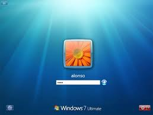

3ero INFORMATICA
integrantes:Samantha Moreno; Cristofer Gansino; Jairo Yamarte.
configuracion y cierre de sesion
Recordemos que cuando se instalo en el sistema operativo windonws XP o windon 7 durante el proceso de istanlacion se nos solicito al menos el nombre de un usuario que fuera trabajar de forma habitual en el sistema. cuando iniciamos sesion, windonws XP inicia sesion directamente con el usuario se introdujo en la lista sin solicitarnos contraseña del usuario creado en el proceso de instalacion. en cualquier caso, la forma de iniciar sesion la podemos personalizar, de tal forma que nos sea mas comodo iniciar sesion en el sistema. en el caso de windonws 7 la personalizacion es menor ya que el inicio clasico no lo tiene completamente. Aqui, para iniciar la sesion hay que hacer un clic en el icono que representa al usuario,introducir la contraseña y pulsar en el icono de login del usuario
